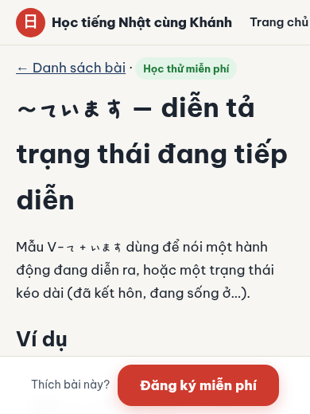
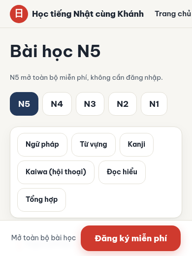
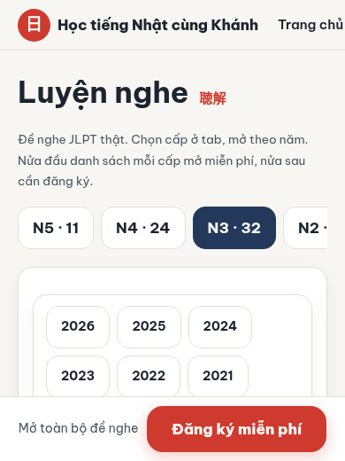
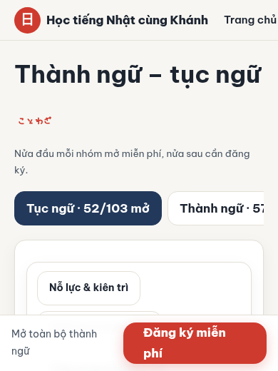

Chào bạn!
Học thử miễn phí ngay — không cần đăng nhập.
Học tiếng Nhật N5→N1 bằng tiếng Việt, mỗi ngày một bước nhỏ.
Bài giảng tiếng Việt có furigana, đề nghe JLPT thật, tin tức tiếng Nhật mỗi sáng và trợ lý AI giải đáp — học trên điện thoại hay máy tính đều được.
Vì sao bạn có thể yên tâm học ở đây
Miễn phí
Bạn học thử ngay không cần tài khoản. Khi đăng ký, việc học vẫn miễn phí ạ.
Làm riêng cho người Việt
Giải thích bằng tiếng Việt, có furigana và âm Hán Việt để bạn nhớ chữ Hán dễ hơn.
Có tiếng Nhật điều dưỡng (kaigo)
Hội thoại và từ vựng dùng trong công việc chăm sóc, hữu ích cho bạn đang hoặc sắp làm kaigo.
Đề JLPT thật
Luyện nghe và thi thử theo đúng dạng đề JLPT, để bạn quen với kỳ thi thật.
🔒 Khi học thử, tiến độ của bạn chỉ lưu trên máy này. Trang không thu thập thêm thông tin nào.
Bên trong bài học




Học miễn phí: N5 toàn bộ, N4 một nửa, N3–N1 bài đầu
Không cần đăng nhập. Chọn cấp để xem bài mở.
🔒 Hỏi AI và Ôn thẻ cần đăng ký.
Bạn muốn lưu lại tiến độ?
Khi có tài khoản, bạn mở được toàn bộ bài học và xem tiến độ trên mọi máy. Đăng ký hoàn toàn miễn phí; tài khoản mới được Khánh duyệt thủ công, trong lúc chờ bạn vẫn học thử bình thường ạ.
Đăng ký miễn phí để lưu tiến độ🔒 Khi học thử, tiến độ chỉ lưu trên máy này của bạn.
こんにちは
Xin chào — hôm nay học một bài nhé
🌱 Thành ngữ động lực hôm nay
TỪ CỦA NGÀY HÔM NAY · 今日の言葉
Khóa học コース
Chọn cấp độ, rồi học theo đúng thứ tự: Ngữ pháp → Từ vựng → Kanji. Mỗi cấp độ chỉ có 3 mục, nhìn một lần là nhớ đường đi.
Luyện tập thêm 練習
Kaiwa 会話
Hội thoại thực tế trong công việc kaigo và đời sống.